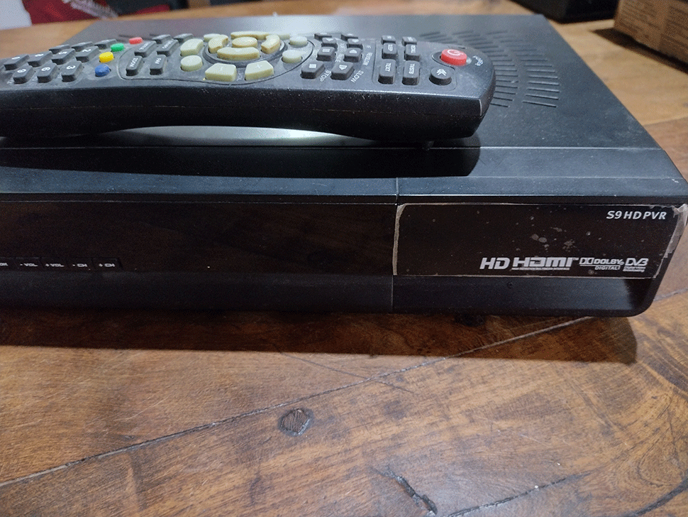
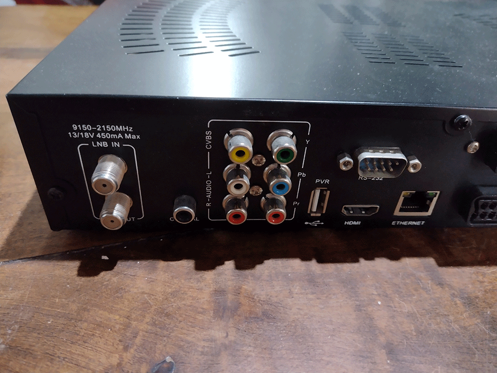

Todo en liquidacion
Retira en Av. 3 y Paseo 121 - Villa Gesell (whatsapp 2255 411851)
OpenBox S9 HD PVR
Libre SKS e IKS Soporte Linux OS, ideal FTA
Características principales:
- 300 MHz MIPS Processor - Linux Operating System
- Receive HD and SD Satellite Signal
- Supports DVB-S, DVB-S2, MPEG-2 & MPEG-4
- Digital Video Recorder through USB
- The most affordable FTA HD receiver on the market today.
- Worldwide compatible
- Hardware Blind Search DVB-S and DVB-S2 (fast search less than 2 Minutes on most satellites)
- Linux Operating System
- STB main IC solution is Ali , demodulator model is M3501 from Ali
- HD DVB-S2 SHARP 7306 Tuner
- Multilingual support on screen menu (OSD): English, French, Deutsch, Italian, Spanish, Swedish, Danish, Greece, Portuguese, Finland, Holland, Turkish, Czech
.png)


.png)
Características básicas:
Fully compliant MPEG-4 H.264/AVC Main Profile Level 3 & High Profile Level 4.1;
Fully compliant MPEG-2 MP@HL & MP@ML;
SCPC & MCPC receivable from C/Ku band satellites
Multiple LNB-Switching control (supports DiSEqC1.0/1.1/unicable)
Motor Support: DiSEqC 1.2/1.3 (USALS - GoTo X)
MHEG-5
7 Days Electronic Program Guide (EPG)
Hardware BLIND SEARCH
Fast channel switching < 1 second
OSD in many languages and skin-support
LED Display
Multiple display mode: 1080i/720p/570p/576i/480p;
MPEG-2 / H.264 hardware decoding
Videotext Decoder
Screen format: Auto, 4:3, and 16:9;
Powerful user interface program management function, parent lock
10/100Mbit Ethernet Interface
CA 1x slot and CI 1xslot
Directly bouquet-lists
§DVB-S2
· Input Frequency:950~2150MHz
· Loop Out Frequency:950~2150MHz
· Input Level:-65~-25dBm
· Input Impedance:75¦¸
· LNB Power: Auto/14v/18v/OFF, Imax = 500mA
§Video decoder
· Video Compression MPEG-2 and MPEG-1 compatible, H.246
· Video Formats 4:3 / 16:9
· Letterbox for 4:3 TV-Device
§Audio decoder
· Audio Compression MPEG-1 & MPEG-2 Layer I and II, MP3
· Audio Mode Dual (main/sub), Stereo
· Frequency: 32 kHz, 44.1 kHz, 48 kHz, 16 kHz, 22.05 kHz, 24 kHz
§Output digital
· Output Level 0,5 Vss on 75 Ohm
· Sampled Data Filtering 32 kHz, 44.1 kHz, 48 kHz
· S/PDIF-Output
§Video parameter
· Input Level FBAS 1 Vss +/- 0.3 dB on 75 Ohm
· Teletext filter in conformity with ETS 300 472 Standard
§TV-Scart
· Output: FBAS, RGB, S-Video
§Serial Interface RS 232
· RS232 bidirectional
· Bit rate 115,2 kBit/s max.
· Plug Connector SUB-D-9
· Function: Update of Firmware
§USB
· 1 x USB 2.0 Host, PVR
§LNB power and polarization per tuner
· LNB Current 500mA max.
· short-circuit-protected
· LNB Voltage vertical menor 14V no load, > 11,5V at 400mA
· LNB Voltage horizontal menor 20V no load, > 17,3V at 400mA
§Physical specification
· Ambient Temperature +15 °C...+35 °C
· Humidity menor 80%
§Physical specification
· Ambient Temperature +15 °C...+35 °C
· Humidity menor 80%
· Size (W x D x H): 300 mm x 220 mm x 56 mm (12in x 8.7in x 2in)
· Weight: 2.0 kg (4 lbs) without HDD
· Gift box:32.5 * 31.5 * 8.5cm.
§Power
· AC auto input range:100-240VAC 50/60Hz
· Consumption (Standby): Max. 10W (menor 1W)
§Notes:
· No 4:2:2 out of the box (not supported)
· No internal hard-drive included with receiver.
· You can connect an optional external HD or Flash Memory through USB.
· HDMI cable is sold separately
Valor de venta: $ 8000
Pago efectivo o por transferencia a cuenta de Mercado Pago.